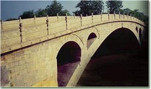

利用网络环境，教学《赵州桥》

湖南省岳阳市鹰山石化厂小学 高娟 邮编 414003
电话 13975047988
E—mail: pcxlll@163.com
《赵州桥》是小学语文第六册的课文。它介绍了赵州桥的位置、设计者以及它雄伟、坚固、美观的特点。是我国古代劳动人民智慧和汗水的结晶，是我国的历史遗产。本课的重点是理解赵州桥的雄伟、坚固和美观。难点是体会桥上形态各异的龙图美。
赵州桥虽然历史悠久，名扬天下，但是学生没有亲临目睹。为了解决课文中的重点和难点，在网络环境下，我凭借电脑多媒体技术优势向学生提供文字、图象、视频、音乐等多种信息，突破时空的限制，使学生具有身临其境之感。充分调动学生的积极性和主动性。
{kind=link}
一、利用网络，拓展阅读
1、自主读书，整体感知
让学生反复朗读，学生想怎么读就怎么读，可以站可以坐可以下位与同学一起读，可以默读，可以大声地读，对于自己喜欢的词语、句子、段落可以多读几遍，甚至可以背诵。
2、播放录象，形象再现
从学校资料库里找到赵州桥的全貌录象进行播放，让学生对赵州桥有一个全面的了解，并有身临其境之感。
3、网上浏览，阅读资料
在互联网上，通过搜弧的搜索引擎可以找到历史名人和建筑的图片和文字资料（教师可以在课前下载）。由学生在网上浏览有关“李春”“赵州桥”的内容。
4、学生交流，理解课文
（1）说说李春。
（2）说说赵州桥
学生通过读一读、看一看、说一说，对赵州桥有了一个较全面的了解。如赵州桥的位置、设计者、雄伟、坚固和美观的特点都说得比较具体。但是对赵州桥在建桥史上是一个创举却理解得不够。为了让学生了解这一创举，要求学生再次朗读第二节的第五句话，然后上网查询，学生可以得到这样的资料：河北的淆河，平时水流量不大，只有在涨水时才有大流量的水经过。同时，那里采石不方便，能节省就节省，符合当地的地理环境和当时的气候环境。它的这种大桥顶上有四个小洞的设计在当时是没有的。直到19世纪中叶，欧洲才有类似的桥，比赵州桥晚了1200多年。学生就很容易明白了。
三、利用网络，动手操作
远看赵州桥像彩虹飞架在淆河上，近看，雕刻在石栏上的图案惟妙惟肖：有的刻着两条缠绕的龙，嘴里吐出美丽的水花；有的刻着两条飞龙，前爪互相抵着，各自回首遥望；有的刻着双龙戏珠。这几句话看似简单，学生要真正读“缠绕”“抵着”“回首遥望”却不容易，教学中我再让学生读课文，再重复播放石栏上的图案并定格，然后，让学生动手操作。在Authorwaer中，老师画出文中龙的形态，以填空的形式，要求学生把龙拖到对应的句子后面。如果对了，就有相应的提示语：“祝贺你，答对了！”龙就乖乖的呆在括号里不动。如果错了也有相应的提示语：“答案错了，要努力！”那龙就不听话，自己回来。平时，都是学生作答，老师打勾打差或是口头评价，而在网络环境下，每个学生都能在电脑上亲手拖拽动手操作，学生兴趣倍增！特别是他们学习探究的成功与失败，马上可以得到反馈。出现错误后，更加刺激了学生的不断努力探索，直到答案正确。学生一直表现出浓厚的兴趣，学得轻松，学得扎实。及时鼓励学生背诵这段文字，记忆牢固深刻。
三、利用网络，进行创作
网络学习，可以直接为学生提供想象的情景，进行现场操作，发挥学生的自主性和创造性。学完课文后，学生可以从校园网络里找到有关桥的片段欣赏。（河北的赵州桥、北京的卢沟桥、南京长江大桥、武汉长江大桥、上海浦东大桥、悉尼大桥等影视资料。）其目的是让学生边欣赏边了解桥的发展史。
学生还可以找到人们根据动植物的形状设计出来的各式各样的桥的图案，目的是使学生明白桥是人们对动植物产生联想而设计建造的。那么，你在课外有什么新发现？可以说一说，画一画。鼓励学生勤观察，多思考，进行创造发明，培养创新能力。学生的设计，老师可以通过网络及时评价指导，学生也可以通过网络互评、互改。
整堂课在愉悦、民主、和谐的气氛中进行，充分调动了学生学习的主动性、积极性。培养了学生积极探索，主动求知，勇于创新的精神。
后附：（桥与动植物的联系）